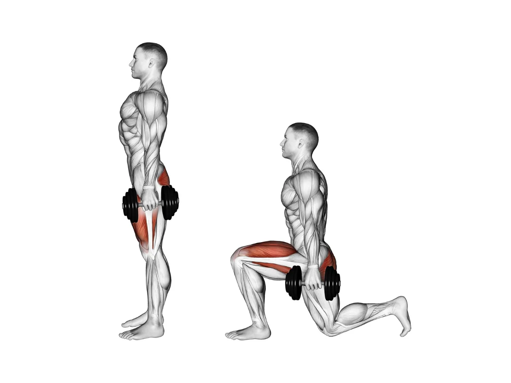
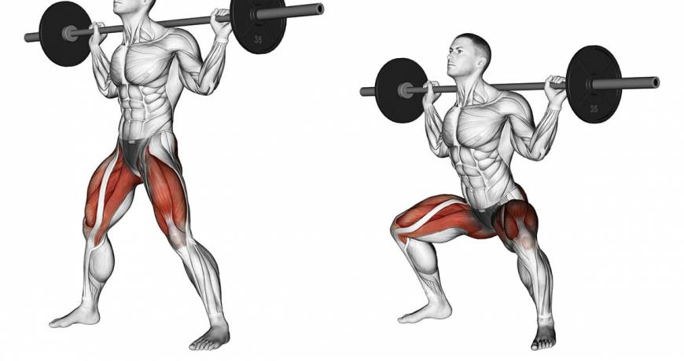
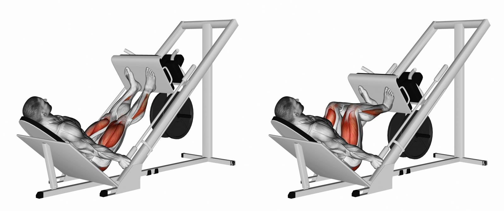

Exercícios para Quadríceps:
Cadeira extensora

Sente-se na cadeira e coloque os pés embaixo da almofada à frente. A parte de frente do calcanhar deve ficar confortável atrás da almofada. Ajuste o assento de forma que você fique com a lombar apoiada. Estenda as pernas para frente, expirando ao fazê-lo. Faça uma pausa por um segundo e, em seguida, inspire lentamente ao retornar à posição inicial.
Afundo com halteres
Comece em pé, com os pés afastados na largura dos quadris e com um haltere em cada mão. Dê um passo à frente com o pé direito, mantendo o pé esquerdo no mesmo lugar. Depois, dobre os joelhos e encoste o joelho esquerdo no chão. É preciso criar um ângulo de 90 graus com os dois. Mantenha o joelho direito atrás dos dedos do pé, o abdômen contraído, as costas retas e o peito levantado. Quando os dois joelhos estiverem a 90 graus, volte à posição inicial. Faça o mesmo com a perna esquerda.
Agachamento livre
Pernas afastadas, depois da linha dos ombros, ponta do pé levemente para fora. Coluna ereta e sempre com o músculo abdominal contraído Agache jogando o quadril para trás e o joelho seguindo a ponta dos pés. À medida que for descendo, incline um pouco o tronco para frente. Retorne a posição inicial, sempre com o abdominal contraído.
Leg press 45
Sentar no aparelho, com as costas apoiadas e os pés posicionados na plataforma na mesma linha dos quadris. Destravar o aparelho e iniciar o movimento para flexionar o joelho até estes se encontrarem mais ou menos em um ângulo de 90 graus. Estender o joelho e depois flexioná-los novamente.